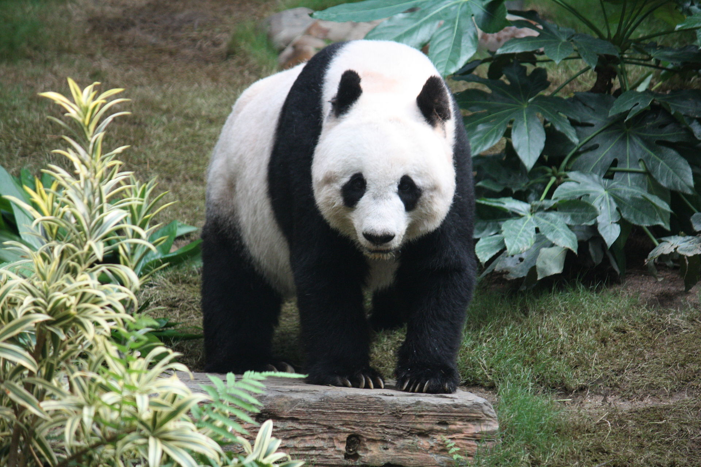

Giant Panda
THE Giant Panda Ailuropoda melanoleuca; Chinese: 大熊猫; pinyin:
dàxióngmāo,[5] also known as the panda bear or simply the panda, is a
bear[6] native to south central China.[1] It is characterised by large,
black patches around its eyes, over the ears, and across its round body.
HM.com - SE
HM.com - US
Hello
The name "giant panda" is sometimes used to distinguish it from the red panda, a neighboring musteloid.
Though it belongs to the order Carnivora, the giant panda is a folivore, with bamboo shoots and leaves making up more than 99% of its diet.[7]
Giant pandas in the wild will occasionally eat other grasses, wild tubers, or even meat in the form of birds, rodents, or carrion.
In captivity, they may receive honey, eggs, fish, yams, shrub leaves, oranges, or bananas along with specially prepared food
The giant panda lives in a few mountain ranges in central China, mainly in Sichuan, but also in neighbouring Shaanxi and Gansu.[10] As a result of farming, deforestation, and other development, the giant panda has been driven out of the lowland areas where it once lived, and it is a conservation-reliant vulnerable species.[11][12] A 2007 report showed 239 pandas living in captivity inside China and another 27 outside the country.[13] As of December 2014, 49 giant pandas lived in captivity outside China, living in 18 zoos in 13 different countries.[14] Wild population estimates vary; one estimate shows that there are about 1,590 individuals living in the wild,[13] while a 2006 study via DNA analysis estimated that this figure could be as high as 2,000 to 3,000.[15] Some reports also show that the number of giant pandas in the wild is on the rise.[16] In March 2015, conservation news site Mongabay stated that the wild giant panda population had increased by 268, or 16.8%, to 1,864.[17] In 2016, the IUCN reclassified the species from "endangered" to "vulnerable",[12] affirming decade-long efforts to save the panda.
While the dragon has often served as China's national symbol, internationally the giant panda has often filled this role. As such, it is becoming widely used within China in international contexts, for example, appearing since 1982 on gold panda bullion coins and as one of the five Fuwa mascots of the Beijing Olympics.
Good bye